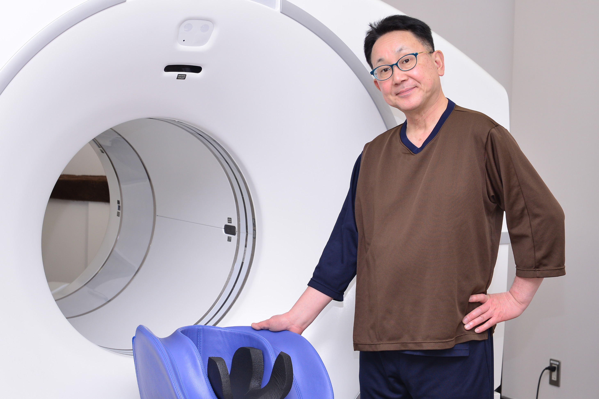

一般的な人間ドックの約2倍の検査項目
関⻄メディカルネットの
「メディカルサポート」で
「総合検診」を受けてみた。
フリーアナウンサー森たけしさん
一般的な人間ドックの約2倍の検査項目
関⻄メディカルネットの
「メディカルサポート」で
「総合検診」を受けてみた。
フリーアナウンサー森たけしさん
年に一度の会員制人間ドックで
「自分を知る」ことが、健康への近道。


これまでにもいろいろな病院で健診を受けてきましたが、お世辞ではなく、こちらが最高峰だと思いますね。清潔・親切・丁寧・スムーズと、言うことなしです。アナウンサー仲間や番組スタッフ、共演者の方たちにも薦めていますし、私のブログでも、今回健診を受けたことをレポートしました。よりたくさんの人に知ってもらい、健診を受けてほしいと思っていますから。

昨年よりも朝の生放送の開始時間が早くなったので、番組がある日は2時半起きです。そのため、前日の18時頃に夕飯を食べて、極力20時半までには布団に入るようにしています。あとは、40歳過ぎてから、毎年人間ドックを受けていること。これが体調管理の一番の秘訣かもしれません。たとえ何か病気が見つかったとしても、今の時代、早期発見さえできれば数ヶ月で治ることが多い。家族や仕事の関係者に迷惑をかける時間も短くてすみますからね。

γ-GTPと中性脂肪が高めなので、脂身を控えたり、お酒もほどほどにしたりと意識しています。これもアドバイザーの方に教えてもらったからこそ、実行できていることですね。運動面では、家でエアロバイクを漕いだり、ストレッチをしたりしています。どちらも、共演者の方に『健康に良いよ』と教えてもらったことがきっかけで始めました。健康に関する情報交換は、仲間内で積極的にしていますね。

昨年、親しくしていたミュージシャンの方が大腸がんで亡くなりました。早期発見さえできれば、治る病気だったのに…。検査したほうがいいよと勧められなかったのが悔やまれます。だからこそ、年に一度の人間ドックは必ず受けてほしい。ドックの結果によって必要であれば、大腸の内視鏡検査も絶対です。改めて、周りの人にしっかり伝えていかないと、と思いました。
代表取締役社長 曽我 武司
もちろんもちろん！ 今年63になりますが、この歳になるともう進化は難しいでしょう（笑）。であれば、退化しないように努力するしかない。人生80年だとすると、あと20年くらいじゃないですか。寝たきりで過ごしたくないので、健康寿命を長くしたい。そしてできるだけ明るく楽しく朗らかに、天寿を全うしたいですね。そのためには、毎年きちんと検査して、自分を知ることが何よりの健康法だと思います。
年齢階級別死亡率（全部位2016年）出展：国⽴がん研究センターがん対策情報センター
メディカルサポートシステムのご案内
メディカルのプロと
理想的な連携を生む
サポートシステムです。
我が国では、「がん」「急性⼼筋梗塞」「脳卒中」が死因の過半数を占めており、これに「糖尿病」を加えた「四⼤疾病」が増えています。
⼀般の⼈間ドックでは、検査内容に不安があるなど、オプション検査を追加される⽅も多いでしょう。

その点、「メディカルサポートシステム」の総合検診の検査は約100項⽬あります。PET、MRI、MRA、CTなど先進的な検査機器による画像診断を複合的に組み合わせて、⾝体の隅々まで徹底的に検査を実施します。
総合検診後は、⼿厚くサポート致します。医療受診が必要な場合は、独⾃の医療ネットワークから、専⾨性が⾼く、治療実績豊かな医師や医療機関を紹介します。 チーム体制でしっかりと⽀えます。

さらに年間を通した健康サポートサービスでは、パーソナルドクターや看護師の資格を有するパーソナルアドバイザーが総合検診の結果や会員⼀⼈ひとりの健康状態に応じた⽣活習慣病の予防、健康維持、増進のサポートを⾏います。